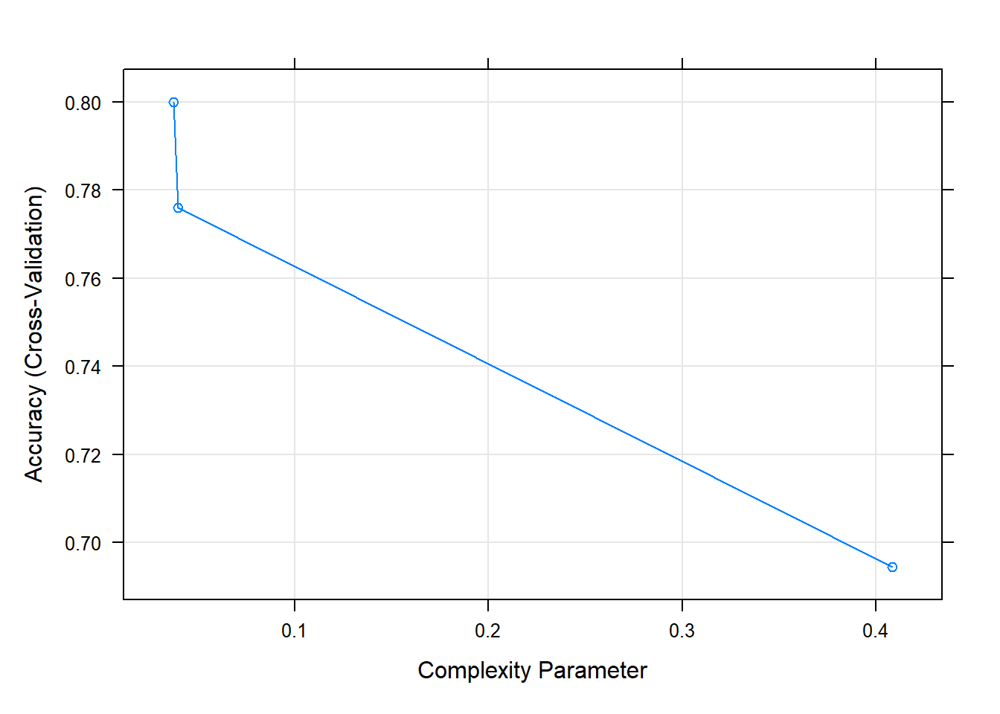
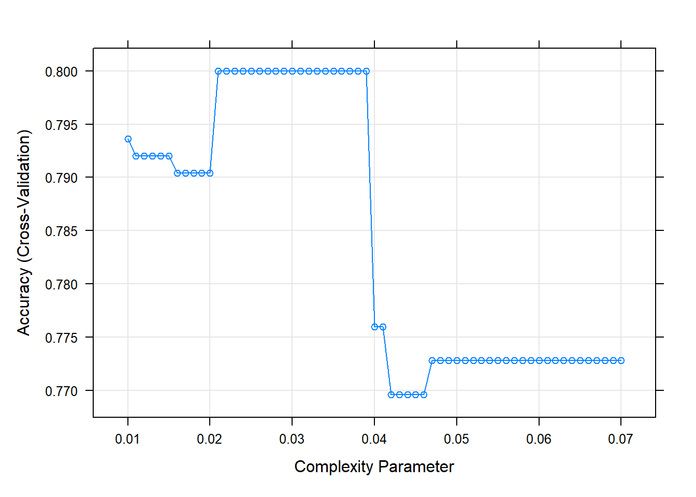
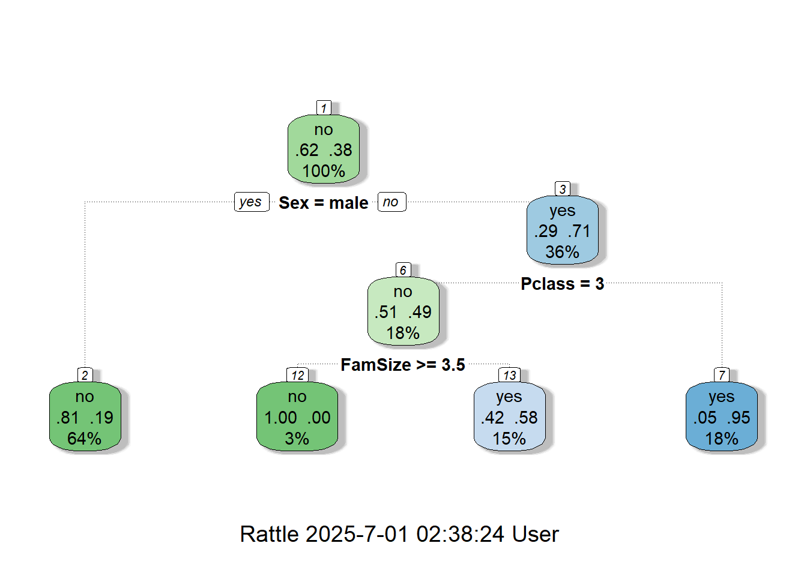
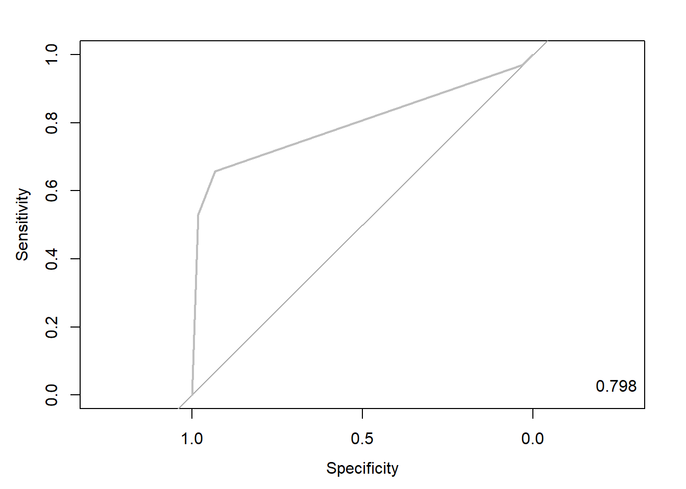
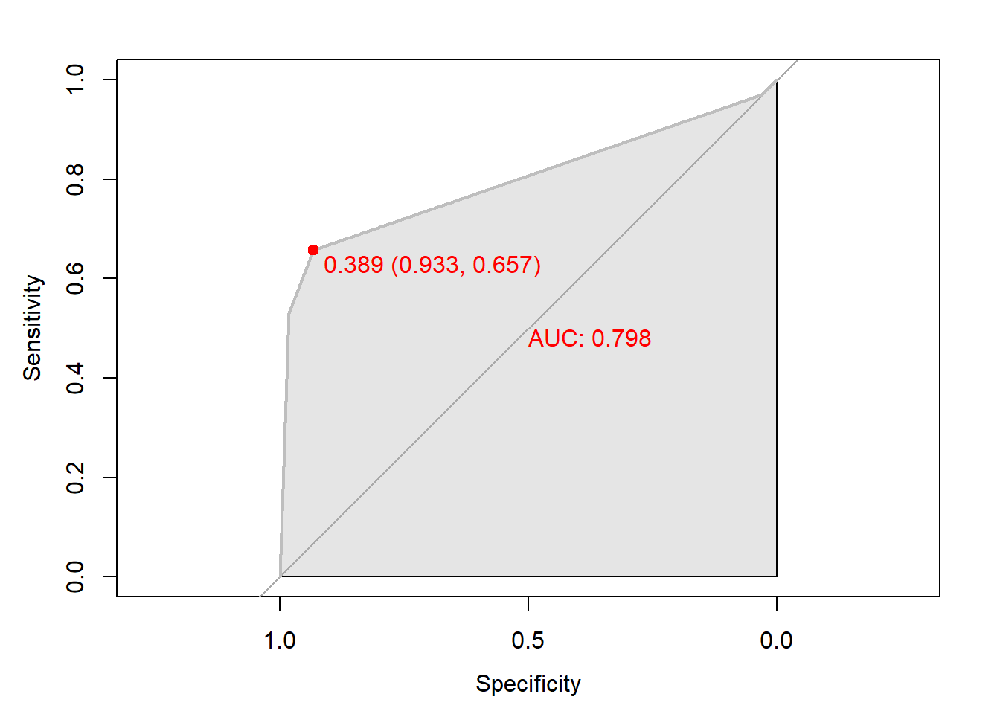
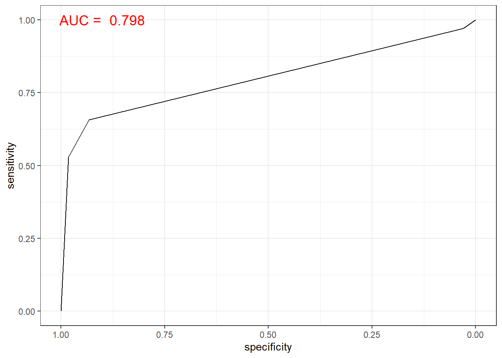
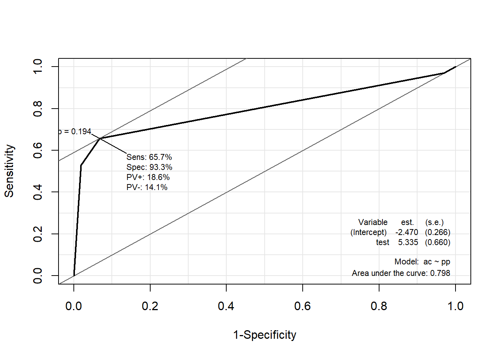
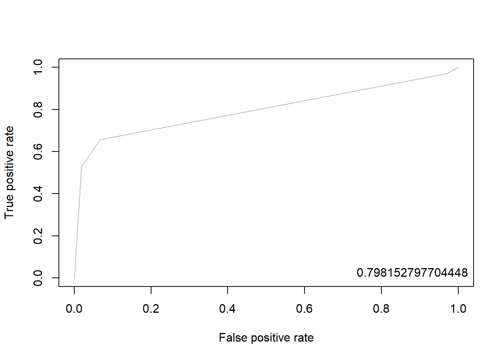
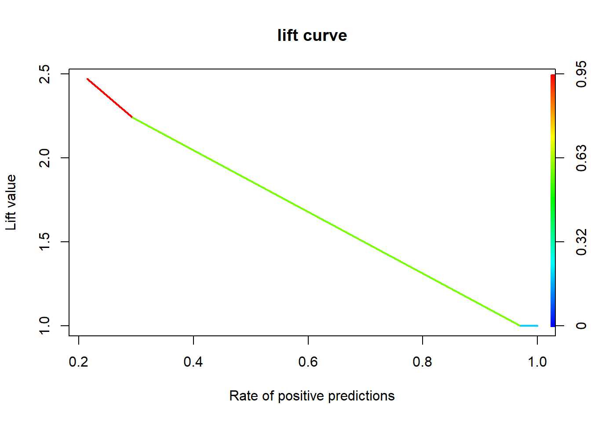

pacman::p_load("data.table",
"tidyverse",
"dplyr", "tidyr",
"ggplot2", "GGally",
"caret",
"rattle", "rpart.plot", # For fancyRpartPlot
"visNetwork", "sparkline", # For visTree
"doParallel", "parallel") # For 병렬 처리
registerDoParallel(cores=detectCores()) # 사용할 Core 개수 지정
titanic <- fread("../Titanic.csv") # 데이터 불러오기
titanic %>%
as_tibble3 Decision Tree
Tree-based Algorithm
- 범주형 예측 변수와 연속형 예측 변수 모두 적용이 가능하다.
- 예측 변수에 대한 분포 가정이 필요없다.
- 다른 척도를 가지는 연속형 예측 변수들에 대해 별도의 변환과정 없이 적용가능하다.
- 표준화/정규화 수행 X
실습 자료 : 1912년 4월 15일 타이타닉호 침몰 당시 탑승객들의 정보를 기록한 데이터셋이며, 총 11개의 변수를 포함하고 있다. 이 자료에서 Target은
Survived이다.


3.1 데이터 불러오기
# A tibble: 891 × 11
Survived Pclass Name Sex Age SibSp Parch Ticket Fare Cabin Embarked
<int> <int> <chr> <chr> <dbl> <int> <int> <chr> <dbl> <chr> <chr>
1 0 3 Braund, Mr. Owen Harris male 22 1 0 A/5 21171 7.25 "" S
2 1 1 Cumings, Mrs. John Bradley (Florence Briggs Thayer) female 38 1 0 PC 17599 71.3 "C85" C
3 1 3 Heikkinen, Miss. Laina female 26 0 0 STON/O2. 3101282 7.92 "" S
4 1 1 Futrelle, Mrs. Jacques Heath (Lily May Peel) female 35 1 0 113803 53.1 "C123" S
5 0 3 Allen, Mr. William Henry male 35 0 0 373450 8.05 "" S
6 0 3 Moran, Mr. James male NA 0 0 330877 8.46 "" Q
7 0 1 McCarthy, Mr. Timothy J male 54 0 0 17463 51.9 "E46" S
8 0 3 Palsson, Master. Gosta Leonard male 2 3 1 349909 21.1 "" S
9 1 3 Johnson, Mrs. Oscar W (Elisabeth Vilhelmina Berg) female 27 0 2 347742 11.1 "" S
10 1 2 Nasser, Mrs. Nicholas (Adele Achem) female 14 1 0 237736 30.1 "" C
# ℹ 881 more rows3.2 데이터 전처리 I
titanic %<>%
data.frame() %>% # Data Frame 형태로 변환
mutate(Survived = ifelse(Survived == 1, "yes", "no")) # Target을 문자형 변수로 변환
# 1. Convert to Factor
fac.col <- c("Pclass", "Sex",
# Target
"Survived")
titanic <- titanic %>%
mutate_at(fac.col, as.factor) # 범주형으로 변환
glimpse(titanic) # 데이터 구조 확인Rows: 891
Columns: 11
$ Survived <fct> no, yes, yes, yes, no, no, no, no, yes, yes, yes, yes, no, no, no, yes, no, yes, no, yes, no, yes, yes, yes, no, yes, no, no, yes, no, no, yes, yes, no, no, no, yes, no, no, yes, no…
$ Pclass <fct> 3, 1, 3, 1, 3, 3, 1, 3, 3, 2, 3, 1, 3, 3, 3, 2, 3, 2, 3, 3, 2, 2, 3, 1, 3, 3, 3, 1, 3, 3, 1, 1, 3, 2, 1, 1, 3, 3, 3, 3, 3, 2, 3, 2, 3, 3, 3, 3, 3, 3, 3, 3, 1, 2, 1, 1, 2, 3, 2, 3, 3…
$ Name <chr> "Braund, Mr. Owen Harris", "Cumings, Mrs. John Bradley (Florence Briggs Thayer)", "Heikkinen, Miss. Laina", "Futrelle, Mrs. Jacques Heath (Lily May Peel)", "Allen, Mr. William Henry…
$ Sex <fct> male, female, female, female, male, male, male, male, female, female, female, female, male, male, female, female, male, male, female, female, male, male, female, male, female, femal…
$ Age <dbl> 22.0, 38.0, 26.0, 35.0, 35.0, NA, 54.0, 2.0, 27.0, 14.0, 4.0, 58.0, 20.0, 39.0, 14.0, 55.0, 2.0, NA, 31.0, NA, 35.0, 34.0, 15.0, 28.0, 8.0, 38.0, NA, 19.0, NA, NA, 40.0, NA, NA, 66.…
$ SibSp <int> 1, 1, 0, 1, 0, 0, 0, 3, 0, 1, 1, 0, 0, 1, 0, 0, 4, 0, 1, 0, 0, 0, 0, 0, 3, 1, 0, 3, 0, 0, 0, 1, 0, 0, 1, 1, 0, 0, 2, 1, 1, 1, 0, 1, 0, 0, 1, 0, 2, 1, 4, 0, 1, 1, 0, 0, 0, 0, 1, 5, 0…
$ Parch <int> 0, 0, 0, 0, 0, 0, 0, 1, 2, 0, 1, 0, 0, 5, 0, 0, 1, 0, 0, 0, 0, 0, 0, 0, 1, 5, 0, 2, 0, 0, 0, 0, 0, 0, 0, 0, 0, 0, 0, 0, 0, 0, 0, 2, 0, 0, 0, 0, 0, 0, 1, 0, 0, 0, 1, 0, 0, 0, 2, 2, 0…
$ Ticket <chr> "A/5 21171", "PC 17599", "STON/O2. 3101282", "113803", "373450", "330877", "17463", "349909", "347742", "237736", "PP 9549", "113783", "A/5. 2151", "347082", "350406", "248706", "38…
$ Fare <dbl> 7.2500, 71.2833, 7.9250, 53.1000, 8.0500, 8.4583, 51.8625, 21.0750, 11.1333, 30.0708, 16.7000, 26.5500, 8.0500, 31.2750, 7.8542, 16.0000, 29.1250, 13.0000, 18.0000, 7.2250, 26.0000,…
$ Cabin <chr> "", "C85", "", "C123", "", "", "E46", "", "", "", "G6", "C103", "", "", "", "", "", "", "", "", "", "D56", "", "A6", "", "", "", "C23 C25 C27", "", "", "", "B78", "", "", "", "", ""…
$ Embarked <chr> "S", "C", "S", "S", "S", "Q", "S", "S", "S", "C", "S", "S", "S", "S", "S", "S", "Q", "S", "S", "C", "S", "S", "Q", "S", "S", "S", "C", "S", "Q", "S", "C", "C", "Q", "S", "C", "S", "…# 2. Generate New Variable
titanic <- titanic %>%
mutate(FamSize = SibSp + Parch) # "FamSize = 형제 및 배우자 수 + 부모님 및 자녀 수"로 가족 수를 의미하는 새로운 변수
glimpse(titanic) # 데이터 구조 확인Rows: 891
Columns: 12
$ Survived <fct> no, yes, yes, yes, no, no, no, no, yes, yes, yes, yes, no, no, no, yes, no, yes, no, yes, no, yes, yes, yes, no, yes, no, no, yes, no, no, yes, yes, no, no, no, yes, no, no, yes, no…
$ Pclass <fct> 3, 1, 3, 1, 3, 3, 1, 3, 3, 2, 3, 1, 3, 3, 3, 2, 3, 2, 3, 3, 2, 2, 3, 1, 3, 3, 3, 1, 3, 3, 1, 1, 3, 2, 1, 1, 3, 3, 3, 3, 3, 2, 3, 2, 3, 3, 3, 3, 3, 3, 3, 3, 1, 2, 1, 1, 2, 3, 2, 3, 3…
$ Name <chr> "Braund, Mr. Owen Harris", "Cumings, Mrs. John Bradley (Florence Briggs Thayer)", "Heikkinen, Miss. Laina", "Futrelle, Mrs. Jacques Heath (Lily May Peel)", "Allen, Mr. William Henry…
$ Sex <fct> male, female, female, female, male, male, male, male, female, female, female, female, male, male, female, female, male, male, female, female, male, male, female, male, female, femal…
$ Age <dbl> 22.0, 38.0, 26.0, 35.0, 35.0, NA, 54.0, 2.0, 27.0, 14.0, 4.0, 58.0, 20.0, 39.0, 14.0, 55.0, 2.0, NA, 31.0, NA, 35.0, 34.0, 15.0, 28.0, 8.0, 38.0, NA, 19.0, NA, NA, 40.0, NA, NA, 66.…
$ SibSp <int> 1, 1, 0, 1, 0, 0, 0, 3, 0, 1, 1, 0, 0, 1, 0, 0, 4, 0, 1, 0, 0, 0, 0, 0, 3, 1, 0, 3, 0, 0, 0, 1, 0, 0, 1, 1, 0, 0, 2, 1, 1, 1, 0, 1, 0, 0, 1, 0, 2, 1, 4, 0, 1, 1, 0, 0, 0, 0, 1, 5, 0…
$ Parch <int> 0, 0, 0, 0, 0, 0, 0, 1, 2, 0, 1, 0, 0, 5, 0, 0, 1, 0, 0, 0, 0, 0, 0, 0, 1, 5, 0, 2, 0, 0, 0, 0, 0, 0, 0, 0, 0, 0, 0, 0, 0, 0, 0, 2, 0, 0, 0, 0, 0, 0, 1, 0, 0, 0, 1, 0, 0, 0, 2, 2, 0…
$ Ticket <chr> "A/5 21171", "PC 17599", "STON/O2. 3101282", "113803", "373450", "330877", "17463", "349909", "347742", "237736", "PP 9549", "113783", "A/5. 2151", "347082", "350406", "248706", "38…
$ Fare <dbl> 7.2500, 71.2833, 7.9250, 53.1000, 8.0500, 8.4583, 51.8625, 21.0750, 11.1333, 30.0708, 16.7000, 26.5500, 8.0500, 31.2750, 7.8542, 16.0000, 29.1250, 13.0000, 18.0000, 7.2250, 26.0000,…
$ Cabin <chr> "", "C85", "", "C123", "", "", "E46", "", "", "", "G6", "C103", "", "", "", "", "", "", "", "", "", "D56", "", "A6", "", "", "", "C23 C25 C27", "", "", "", "B78", "", "", "", "", ""…
$ Embarked <chr> "S", "C", "S", "S", "S", "Q", "S", "S", "S", "C", "S", "S", "S", "S", "S", "S", "Q", "S", "S", "C", "S", "S", "Q", "S", "S", "S", "C", "S", "Q", "S", "C", "C", "Q", "S", "C", "S", "…
$ FamSize <int> 1, 1, 0, 1, 0, 0, 0, 4, 2, 1, 2, 0, 0, 6, 0, 0, 5, 0, 1, 0, 0, 0, 0, 0, 4, 6, 0, 5, 0, 0, 0, 1, 0, 0, 1, 1, 0, 0, 2, 1, 1, 1, 0, 3, 0, 0, 1, 0, 2, 1, 5, 0, 1, 1, 1, 0, 0, 0, 3, 7, 0…# 3. Select Variables used for Analysis
titanic1 <- titanic %>%
select(Survived, Pclass, Sex, Age, Fare, FamSize) # 분석에 사용할 변수 선택
glimpse(titanic1) # 데이터 구조 확인Rows: 891
Columns: 6
$ Survived <fct> no, yes, yes, yes, no, no, no, no, yes, yes, yes, yes, no, no, no, yes, no, yes, no, yes, no, yes, yes, yes, no, yes, no, no, yes, no, no, yes, yes, no, no, no, yes, no, no, yes, no…
$ Pclass <fct> 3, 1, 3, 1, 3, 3, 1, 3, 3, 2, 3, 1, 3, 3, 3, 2, 3, 2, 3, 3, 2, 2, 3, 1, 3, 3, 3, 1, 3, 3, 1, 1, 3, 2, 1, 1, 3, 3, 3, 3, 3, 2, 3, 2, 3, 3, 3, 3, 3, 3, 3, 3, 1, 2, 1, 1, 2, 3, 2, 3, 3…
$ Sex <fct> male, female, female, female, male, male, male, male, female, female, female, female, male, male, female, female, male, male, female, female, male, male, female, male, female, femal…
$ Age <dbl> 22.0, 38.0, 26.0, 35.0, 35.0, NA, 54.0, 2.0, 27.0, 14.0, 4.0, 58.0, 20.0, 39.0, 14.0, 55.0, 2.0, NA, 31.0, NA, 35.0, 34.0, 15.0, 28.0, 8.0, 38.0, NA, 19.0, NA, NA, 40.0, NA, NA, 66.…
$ Fare <dbl> 7.2500, 71.2833, 7.9250, 53.1000, 8.0500, 8.4583, 51.8625, 21.0750, 11.1333, 30.0708, 16.7000, 26.5500, 8.0500, 31.2750, 7.8542, 16.0000, 29.1250, 13.0000, 18.0000, 7.2250, 26.0000,…
$ FamSize <int> 1, 1, 0, 1, 0, 0, 0, 4, 2, 1, 2, 0, 0, 6, 0, 0, 5, 0, 1, 0, 0, 0, 0, 0, 4, 6, 0, 5, 0, 0, 0, 1, 0, 0, 1, 1, 0, 0, 2, 1, 1, 1, 0, 3, 0, 0, 1, 0, 2, 1, 5, 0, 1, 1, 1, 0, 0, 0, 3, 7, 0…3.3 데이터 탐색
ggpairs(titanic1,
aes(colour = Survived)) + # Target의 범주에 따라 색깔을 다르게 표현
theme_bw()
ggpairs(titanic1,
aes(colour = Survived, alpha = 0.8)) + # Target의 범주에 따라 색깔을 다르게 표현
scale_colour_manual(values = c("#00798c", "#d1495b")) + # 특정 색깔 지정
scale_fill_manual(values = c("#00798c", "#d1495b")) + # 특정 색깔 지정
theme_bw()
3.4 데이터 분할
# Partition (Training Dataset : Test Dataset = 7:3)
y <- titanic1$Survived # Target
set.seed(200)
ind <- createDataPartition(y, p = 0.7, list =T) # Index를 이용하여 7:3으로 분할
titanic.trd <- titanic1[ind$Resample1,] # Training Dataset
titanic.ted <- titanic1[-ind$Resample1,] # Test Dataset3.5 데이터 전처리 II
# Imputation
titanic.trd.Imp <- titanic.trd %>%
mutate(Age = replace_na(Age, mean(Age, na.rm = TRUE))) # 평균으로 결측값 대체
titanic.ted.Imp <- titanic.ted %>%
mutate(Age = replace_na(Age, mean(titanic.trd$Age, na.rm = TRUE))) # Training Dataset을 이용하여 결측값 대체
glimpse(titanic.trd.Imp) # 데이터 구조 확인Rows: 625
Columns: 6
$ Survived <fct> no, yes, yes, no, no, no, yes, yes, yes, yes, no, no, yes, no, yes, no, yes, no, no, no, yes, no, no, yes, yes, no, no, no, no, no, yes, no, no, no, yes, no, yes, no, no, no, yes, n…
$ Pclass <fct> 3, 3, 1, 3, 3, 3, 3, 2, 3, 1, 3, 3, 2, 3, 3, 2, 1, 3, 3, 1, 3, 3, 1, 1, 3, 2, 1, 1, 3, 3, 3, 3, 2, 3, 3, 3, 3, 3, 3, 3, 1, 1, 1, 3, 3, 1, 3, 1, 3, 3, 3, 3, 3, 3, 2, 3, 3, 3, 1, 2, 3…
$ Sex <fct> male, female, female, male, male, male, female, female, female, female, male, female, male, female, female, male, male, female, male, male, female, male, male, female, female, male,…
$ Age <dbl> 22.00000, 26.00000, 35.00000, 35.00000, 29.93737, 2.00000, 27.00000, 14.00000, 4.00000, 58.00000, 39.00000, 14.00000, 29.93737, 31.00000, 29.93737, 35.00000, 28.00000, 8.00000, 29.9…
$ Fare <dbl> 7.2500, 7.9250, 53.1000, 8.0500, 8.4583, 21.0750, 11.1333, 30.0708, 16.7000, 26.5500, 31.2750, 7.8542, 13.0000, 18.0000, 7.2250, 26.0000, 35.5000, 21.0750, 7.2250, 263.0000, 7.8792,…
$ FamSize <int> 1, 0, 1, 0, 0, 4, 2, 1, 2, 0, 6, 0, 0, 1, 0, 0, 0, 4, 0, 5, 0, 0, 0, 1, 0, 0, 1, 1, 0, 2, 1, 1, 1, 0, 0, 1, 0, 2, 1, 5, 1, 1, 0, 7, 0, 0, 5, 0, 2, 7, 1, 0, 0, 0, 2, 0, 0, 0, 0, 0, 3…glimpse(titanic.ted.Imp) # 데이터 구조 확인Rows: 266
Columns: 6
$ Survived <fct> yes, no, no, yes, no, yes, yes, yes, yes, yes, no, no, yes, yes, no, yes, no, yes, yes, no, yes, no, no, no, no, no, no, yes, yes, no, no, no, no, no, no, no, no, no, no, yes, no, n…
$ Pclass <fct> 1, 1, 3, 2, 3, 2, 3, 3, 3, 2, 3, 3, 2, 2, 3, 2, 1, 3, 2, 3, 3, 2, 2, 3, 3, 3, 3, 1, 2, 2, 3, 3, 3, 3, 3, 2, 3, 2, 2, 2, 3, 3, 2, 1, 3, 1, 3, 2, 1, 3, 3, 3, 3, 3, 3, 3, 3, 1, 3, 1, 3…
$ Sex <fct> female, male, male, female, male, male, female, female, male, female, male, male, female, female, male, female, male, male, female, male, female, male, male, male, male, male, male,…
$ Age <dbl> 38.00000, 54.00000, 20.00000, 55.00000, 2.00000, 34.00000, 15.00000, 38.00000, 29.93737, 3.00000, 29.93737, 21.00000, 29.00000, 21.00000, 28.50000, 5.00000, 45.00000, 29.93737, 29.0…
$ Fare <dbl> 71.2833, 51.8625, 8.0500, 16.0000, 29.1250, 13.0000, 8.0292, 31.3875, 7.2292, 41.5792, 8.0500, 7.8000, 26.0000, 10.5000, 7.2292, 27.7500, 83.4750, 15.2458, 10.5000, 8.1583, 7.9250, …
$ FamSize <int> 1, 0, 0, 0, 5, 0, 0, 6, 0, 3, 0, 0, 1, 0, 0, 3, 1, 2, 0, 0, 6, 0, 0, 0, 0, 4, 0, 1, 1, 1, 0, 0, 0, 0, 0, 1, 6, 2, 1, 0, 0, 1, 0, 2, 0, 0, 0, 0, 1, 0, 0, 1, 5, 2, 5, 0, 5, 0, 4, 0, 6…3.6 모형 훈련
Package "caret"은 통합 API를 통해 R로 기계 학습을 실행할 수 있는 매우 실용적인 방법을 제공한다. Package "caret"에서는 초모수의 최적의 조합을 찾는 방법으로 그리드 검색(Grid Search), 랜덤 검색(Random Search), 직접 탐색 범위 설정이 있다. 여기서는 초모수 cp (Complexity Parameter)의 최적값을 찾기 위해 그리드 검색을 수행하였고, 이를 기반으로 직접 탐색 범위를 설정하였다. 아래는 그리드 검색을 수행하였을 때 결과이다.
fitControl <- trainControl(method = "cv", number = 5, # 5-Fold Cross Validation (5-Fold CV)
allowParallel = TRUE) # 병렬 처리
set.seed(100) # For CV
rtree.caret <- train(x = titanic.trd.Imp[,-1], # Training Dataset including Only 예측 변수
y = titanic.trd.Imp[,"Survived"], # Training Dataset including Only Target
method = "rpart",
trControl = fitControl) Caution! Package "caret"에서는 함수 rpart()의 옵션 xval = 0이며, cp의 최적값을 이용하여 최종 모형을 훈련하기 때문에 가지치기를 수행할 필요가 없다. 게다가, Package "caret"을 통해 "rpart"를 수행하는 경우, 함수 train(Target ~ 예측 변수, data)를 사용하면 범주형 예측 변수는 자동적으로 더미 변환이 된다. 범주형 예측 변수에 대해 더미 변환을 수행하고 싶지 않다면 함수 train(x = 예측 변수만 포함하는 데이터셋, y = Target만 포함하는 데이터셋)를 사용한다.
rtree.caretCART
625 samples
5 predictor
2 classes: 'no', 'yes'
No pre-processing
Resampling: Cross-Validated (5 fold)
Summary of sample sizes: 500, 500, 500, 500, 500
Resampling results across tuning parameters:
cp Accuracy Kappa
0.03750000 0.8000 0.5702342
0.03958333 0.7760 0.5253156
0.40833333 0.6944 0.2790591
Accuracy was used to select the optimal model using the largest value.
The final value used for the model was cp = 0.0375.plot(rtree.caret) # Plot
Result! 랜덤하게 결정된 3개의 cp 값에 대한 정확도를 보여주며, cp = 0.0375일 때 정확도가 가장 높은 것을 알 수 있다. 따라서 그리드 검색을 통해 찾은 최적의 초모수 값 0.0375 근처의 값들을 탐색 범위로 설정하여 훈련을 다시 수행할 수 있다.
customGrid <- expand.grid(cp = seq(0.01, 0.07, by = 0.001)) # cp의 탐색 범위
set.seed(100) # For CV
rtree.grid.caret <- train(x = titanic.trd.Imp[,-1], # Training Dataset including Only 예측 변수
y = titanic.trd.Imp[,"Survived"], # Training Dataset including Only Target
tuneGrid = customGrid,
method = "rpart",
trControl = fitControl)
rtree.grid.caretCART
625 samples
5 predictor
2 classes: 'no', 'yes'
No pre-processing
Resampling: Cross-Validated (5 fold)
Summary of sample sizes: 500, 500, 500, 500, 500
Resampling results across tuning parameters:
cp Accuracy Kappa
0.010 0.7936 0.5485790
0.011 0.7920 0.5477686
0.012 0.7920 0.5477686
0.013 0.7920 0.5463259
0.014 0.7920 0.5463259
0.015 0.7920 0.5463259
0.016 0.7904 0.5462842
0.017 0.7904 0.5462842
0.018 0.7904 0.5462842
0.019 0.7904 0.5462842
0.020 0.7904 0.5462842
0.021 0.8000 0.5702342
0.022 0.8000 0.5702342
0.023 0.8000 0.5702342
0.024 0.8000 0.5702342
0.025 0.8000 0.5702342
0.026 0.8000 0.5702342
0.027 0.8000 0.5702342
0.028 0.8000 0.5702342
0.029 0.8000 0.5702342
0.030 0.8000 0.5702342
0.031 0.8000 0.5702342
0.032 0.8000 0.5702342
0.033 0.8000 0.5702342
0.034 0.8000 0.5702342
0.035 0.8000 0.5702342
0.036 0.8000 0.5702342
0.037 0.8000 0.5702342
0.038 0.8000 0.5702342
0.039 0.8000 0.5702342
0.040 0.7760 0.5253156
0.041 0.7760 0.5253156
0.042 0.7696 0.5105699
0.043 0.7696 0.5105699
0.044 0.7696 0.5105699
0.045 0.7696 0.5105699
0.046 0.7696 0.5105699
0.047 0.7728 0.5151960
0.048 0.7728 0.5151960
0.049 0.7728 0.5151960
0.050 0.7728 0.5151960
0.051 0.7728 0.5151960
0.052 0.7728 0.5151960
0.053 0.7728 0.5151960
0.054 0.7728 0.5151960
0.055 0.7728 0.5151960
0.056 0.7728 0.5151960
0.057 0.7728 0.5151960
0.058 0.7728 0.5151960
0.059 0.7728 0.5151960
0.060 0.7728 0.5151960
0.061 0.7728 0.5151960
0.062 0.7728 0.5151960
0.063 0.7728 0.5151960
0.064 0.7728 0.5151960
0.065 0.7728 0.5151960
0.066 0.7728 0.5151960
0.067 0.7728 0.5151960
0.068 0.7728 0.5151960
0.069 0.7728 0.5151960
0.070 0.7728 0.5151960
Accuracy was used to select the optimal model using the largest value.
The final value used for the model was cp = 0.039.plot(rtree.grid.caret) # Plot
rtree.grid.caret$bestTune # cp의 최적값 cp
30 0.039Result! cp = 0.039일 때 정확도가 가장 높다는 것을 알 수 있으며, cp = 0.039를 가지는 모형을 최적의 훈련된 모형으로 선택한다.
3.7 Tree Plot
3.7.1 “fancyRpartPlot”
fancyRpartPlot(rtree.grid.caret$finalModel) # Plot
3.7.2 “visTree”
visTree(rtree.grid.caret$finalModel) # Network-based Plot 3.8 모형 평가
Caution! 모형 평가를 위해 Test Dataset에 대한 예측 class/확률 이 필요하며, 함수 predict()를 이용하여 생성한다.
# 예측 class 생성
rtree.grid.caret.pred <- predict(rtree.grid.caret,
newdata = titanic.ted.Imp[,-1]) # Test Dataset including Only 예측 변수
rtree.grid.caret.pred %>%
as_tibble # A tibble: 266 × 1
value
<fct>
1 yes
2 no
3 no
4 yes
5 no
6 no
7 yes
8 no
9 no
10 yes
# ℹ 256 more rows3.8.1 ConfusionMatrix
CM <- caret::confusionMatrix(rtree.grid.caret.pred, titanic.ted.Imp$Survived,
positive = "yes") # confusionMatrix(예측 class, 실제 class, positive = "관심 class")
CMConfusion Matrix and Statistics
Reference
Prediction no yes
no 153 35
yes 11 67
Accuracy : 0.8271
95% CI : (0.7762, 0.8705)
No Information Rate : 0.6165
P-Value [Acc > NIR] : 6.692e-14
Kappa : 0.6172
Mcnemar's Test P-Value : 0.000696
Sensitivity : 0.6569
Specificity : 0.9329
Pos Pred Value : 0.8590
Neg Pred Value : 0.8138
Prevalence : 0.3835
Detection Rate : 0.2519
Detection Prevalence : 0.2932
Balanced Accuracy : 0.7949
'Positive' Class : yes
3.8.2 ROC 곡선
# 예측 확률 생성
test.rtree.prob <- predict(rtree.grid.caret,
newdata = titanic.ted.Imp[,-1],# Test Dataset including Only 예측 변수
type = "prob") # 예측 확률 생성
test.rtree.prob %>%
as_tibble# A tibble: 266 × 2
no yes
<dbl> <dbl>
1 0.0531 0.947
2 0.806 0.194
3 0.806 0.194
4 0.0531 0.947
5 0.806 0.194
6 0.806 0.194
7 0.417 0.583
8 1 0
9 0.806 0.194
10 0.0531 0.947
# ℹ 256 more rowstest.rtree.prob <- test.rtree.prob[,2] # "Survived = yes"에 대한 예측 확률
ac <- titanic.ted.Imp$Survived # Test Dataset의 실제 class
pp <- as.numeric(test.rtree.prob) # 예측 확률을 수치형으로 변환3.8.2.1 Package “pROC”
pacman::p_load("pROC")
rtree.roc <- roc(ac, pp, plot = T, col = "gray") # roc(실제 class, 예측 확률)
auc <- round(auc(rtree.roc), 3)
legend("bottomright", legend = auc, bty = "n")
Caution! Package "pROC"를 통해 출력한 ROC 곡선은 다양한 함수를 이용해서 그래프를 수정할 수 있다.
# 함수 plot.roc() 이용
plot.roc(rtree.roc,
col="gray", # Line Color
print.auc = TRUE, # AUC 출력 여부
print.auc.col = "red", # AUC 글씨 색깔
print.thres = TRUE, # Cutoff Value 출력 여부
print.thres.pch = 19, # Cutoff Value를 표시하는 도형 모양
print.thres.col = "red", # Cutoff Value를 표시하는 도형의 색깔
auc.polygon = TRUE, # 곡선 아래 면적에 대한 여부
auc.polygon.col = "gray90") # 곡선 아래 면적의 색깔
# 함수 ggroc() 이용
ggroc(rtree.roc) +
annotate(geom = "text", x = 0.9, y = 1.0,
label = paste("AUC = ", auc),
size = 5,
color="red") +
theme_bw()
3.8.2.2 Package “Epi”
pacman::p_load("Epi")
# install_version("etm", version = "1.1", repos = "http://cran.us.r-project.org")
ROC(pp, ac, plot = "ROC") # ROC(예측 확률, 실제 class) 
3.8.2.3 Package “ROCR”
pacman::p_load("ROCR")
rtree.pred <- prediction(pp, ac) # prediction(예측 확률, 실제 class)
rtree.perf <- performance(rtree.pred, "tpr", "fpr") # performance(, "민감도", "1-특이도")
plot(rtree.perf, col = "gray") # ROC Curve
perf.auc <- performance(rtree.pred, "auc") # AUC
auc <- attributes(perf.auc)$y.values
legend("bottomright", legend = auc, bty = "n")
3.8.3 향상 차트
3.8.3.1 Package “ROCR”
rtree.perf <- performance(rtree.pred, "lift", "rpp") # Lift Chart
plot(rtree.perf, main = "lift curve",
colorize = T, # Coloring according to cutoff
lwd = 2) 